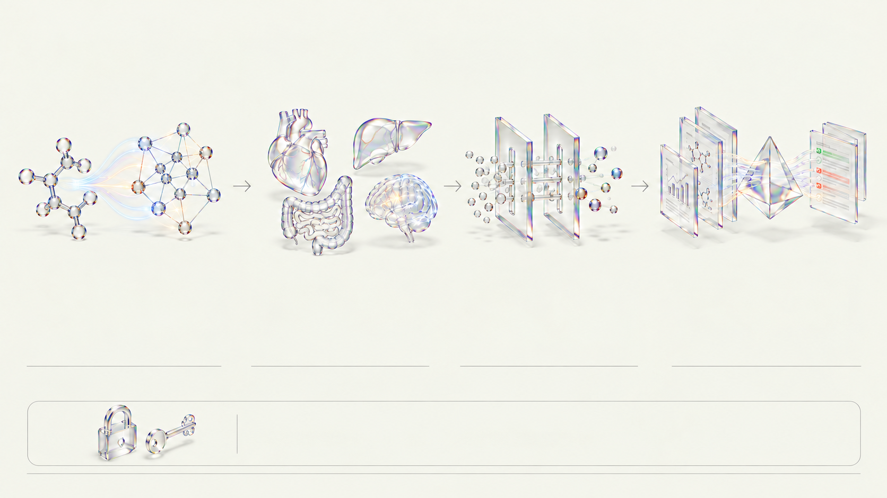

그래프 신경망 약동학·독성 예측
ADMET-AI v2 (Chemprop MPNN)
분자를 원자와 결합의 그래프로 보고 메시지 전달 그래프 신경망(MPNN)으로 흡수·분포·대사·배설·독성(ADMET) 지표를 예측합니다.
Chemprop MPNN 모델

CRISTA · STEP 04 · ADMET & DUAL REVIEW
체내 흡수·독성 위험 신호를 예측하고 코드 규칙과 AI 심사관이 신청서를 검증합니다.
ADMET-AI v2 (Chemprop MPNN)
분자를 원자와 결합의 그래프로 보고 메시지 전달 그래프 신경망(MPNN)으로 흡수·분포·대사·배설·독성(ADMET) 지표를 예측합니다.
Chemprop MPNN 모델
ADMET-AI v2 (hERG · DILI · BBB)
수십만 건의 실험 데이터를 학습한 모델로 심장 hERG 채널 저해 위험, 간독성(DILI), 장 흡수율, 뇌혈관장벽 투과율을 추정합니다.
hERG · DILI · 장 흡수
서버 규칙 엔진 (§5.11)
시판약 여부(신규성), 모둠 간 선착순 특허 중복, 동물실험 마릿수 과다, 최대 안전 시작 용량(MRSD) 초과를 코드가 100% 판정합니다.
신규성 · 선착순 · MRSD
Claude Opus 5.5 (3.1 · 3.2 · 3.3)
특허·동물윤리·식약처/FDA 심사관 역할로 서술과 데이터의 모순이나 간독성 감시 계획 누락을 찾아 보완 요구(revise) 피드백을 줍니다.
데이터-서술 정합성 · revise
ADMET 예측치는 컴퓨터 모델의 위험 신호 추정일 뿐 실제 임상 독성 확정이 아니며, 안전 모니터링 설계의 근거로 활용합니다.